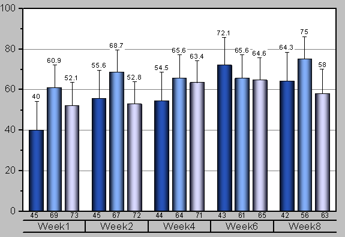
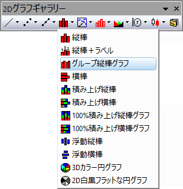
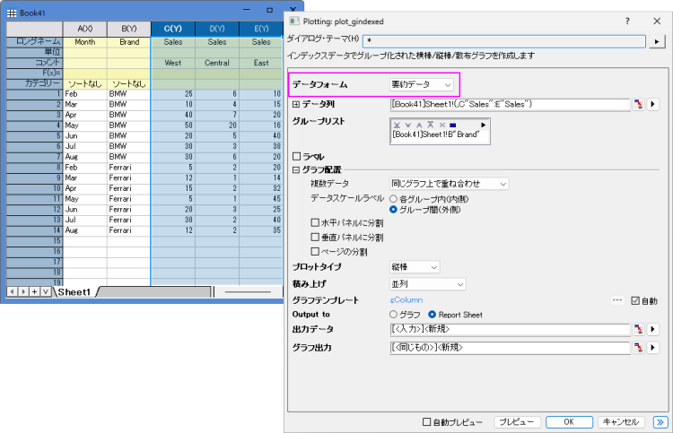
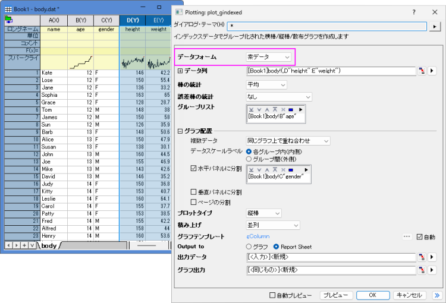
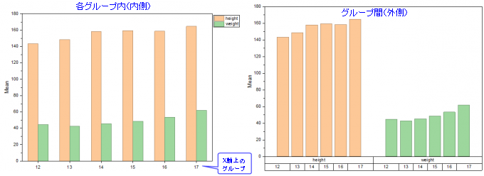
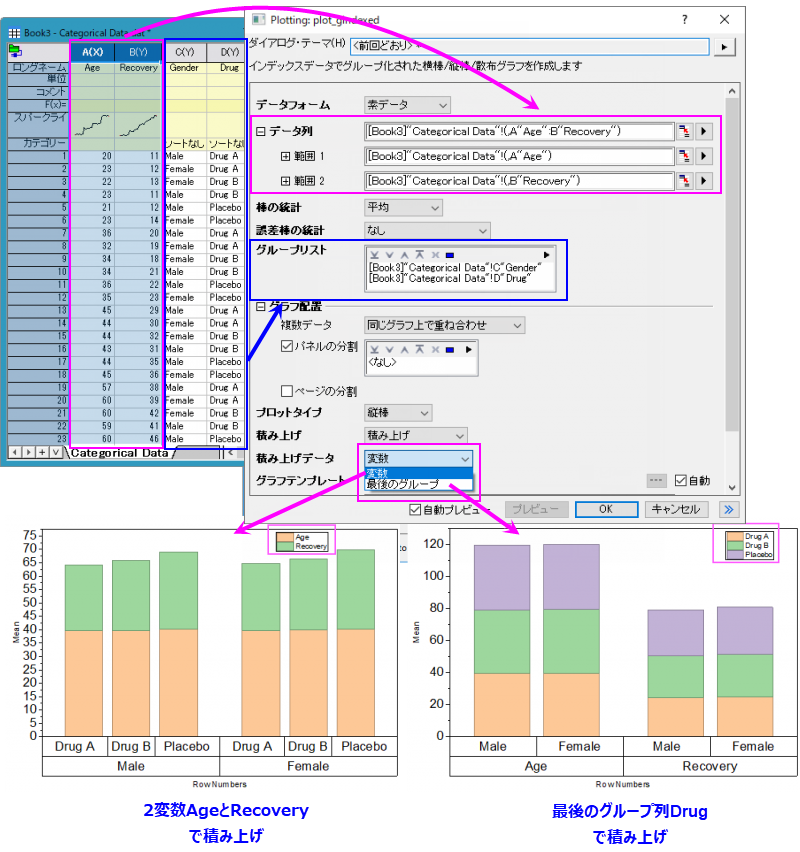
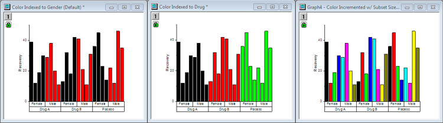

グループ化縦棒グラフ
grouped-column-index-data

要求されるデータ
入力データとして最低1つY列が必要です。オプションで、各Y列に対応するYエラー列を持たせることもできます。他の列はグループ化情報を提供します。
グラフ作成
plot_gindexedダイアログは、次の3つの方法のいずれかで開きます。
- メニューから，作図> カテゴリカル：グループ縦棒グラフを選択します。
- 2Dグラフギャラリーツールバーの
 ボタンをクリックします。
ボタンをクリックします。

開いたダイアログで、入力データ範囲を選択します。最低でも1つのグループ列を追加し、計算データの出力先を指定します。すると、グループ化縦棒グラフが生成されます。
ダイアログの内容に関する詳細は、次のセクションを参照してください。
plot_gindexedダイアログボックス

この例では、すべての売上データが、グループリストで選択したグループ（X軸）に対する棒としてプロットされます。

この例では、身長データと体重データの平均値が、グループリストで選択したグループ（X軸）に対する棒としてプロットされます。
要約データの場合
デフォルトでは、データ形式は要約データに設定されています。これは、入力データがインデックスデータであることを意味します。
| データ列
|
この欄は、入力データを指定するのに使用します。
|
| グループ列
|
グループ化列を選択します。
|
| ラベル
|
このチェックを付けると、ラベル列として1つまたは複数の列を選択できます。
複数の入力データ列を持つグラフでは、ラベル列が1つしか選択されていない場合、これらのプロットはすべて同じラベル列を共有します。同じ数のラベル列が選択されている場合、各プロットは選択された順序でラベル列を持ちます。
|
| グラフ配置
|
- 複数データ：複数入力データの配置方法を選択します。
- 同じグラフ上で重ね合わせ: 選択した入力データを、同じグラフレイヤ上に重なり合ったプロットとしてプロットします。
- 同じグラフ内でレイヤを分ける：選択された入力データを同じグラフページ上の別々のレイヤに個別にプロットします。
- グラフを分ける: 選択した入力データを別のグラフウィンドウにプロットします。
- データスケールラベル：グループを持つ複数のデータがある場合、このオプションを使用して、データ変数情報をグループの内側またはグループの外側に置くことができます。

- 水平パネルに分割：このチェックボックスをオンにすると、別のグループ化列を指定して、横方向にパネルを分割できます。各グループ値に対して、個別のグループ化棒グラフが表示されます。
- 垂直パネルに分割にチェックが付いていない場合、区分の折り返しが有効で目盛やラベルは、左右交互に表示されるのが初期設定です。
- 複数の列でグループ化している場合でも、パネル情報ラベルは1行のみが上部に表示されます。パネルのバナー文字列としてすべての因子（グループ値）がカンマ区切りで表示されます。
- 垂直パネルに分割：このチェックボックスをオンにすると、別のグループ化列を指定して、縦方向にパネルを分割できます。各グループ値に対して、個別のグループ化棒グラフが表示されます。
- 水平パネルに分割にチェックが付いていない場合、区分の折り返しが有効で目盛やラベルは、左右交互に表示されるのが初期設定です。
- 複数の列でグループ化している場合でも、パネル情報ラベルは1行のみが上部に表示されます。パネルのバナー文字列としてすべての因子（グループ値）がカンマ区切りで表示されます。
- ページの分割：このチェックボックスをオンにすると、別のグループ化列を指定して、入力データを分割し、異なるグラフページにグループ化棒グラフを作成できます。各ページには、同じページ関連グループに属する列だけがプロットされます。ページに関連するグループ情報は、レイヤータイトルにカンマ区切りで表示されます（複数因子がある場合）。レポート用のグラフシートには、すべてのページが一覧表示されます。
|
| プロットタイプ
|
プロットタイプを縦棒・横棒・散布図から指定します。
|
| 積み上げ
|
複数の入力変数を同じグラフに重ね合わせる場合に、棒を積み上げるかどうかを指定します。並列、積み上げ、または100%積み上げから選択できます。このオプションは、プロットタイプが散布図である場合は使用できません。
|
| グラフテンプレート
|
必要に応じてユーザテンプレートを指定します。デフォルトでは、自動チェックボックスがオンになっており、組み込みテンプレートGBOXが使用されています。
|
| 出力先
|
グラフを出力する場所として、別のグラフウィンドウまたはレポートシート内に埋め込む場所を指定します。
|
| 出力データ
|
計算したデータの出力先を指定します。
|
| グラフ出力
|
結果グラフを出力するシートを指定します。
|
さらに、このダイアログでは作成されるグラフをプレビュー出来ます。
| Note: グループ範囲はデフォルトでアルファベット順にソートされますが、変更したい場合、列をカテゴリーとして設定し、カテゴリータブで順序を編集します。
|
素データの場合
データフォームドロップダウンリストの素データを選択すると、選択した入力データの統計情報を列または棒グラフとして表示するための2つのオプションが表示され、さらに積み上げデータというオプションが、縦棒グラフおよび横棒グラフのタイプで表示され、データを積み重ねる対象を指定できます。
- 棒の統計: 縦棒または横棒で表示される統計値の種類を選択できます。ドロップダウンリストで、平均、N、N 欠損、中央値、最小値、最大、合計、SD、幾何平均、調和平均、分散から選択できます。
- 誤差棒の統計: 縦棒/横棒のエラーバーとして表示される統計値の種類を選択できます。ドロップダウンリストで、なし、SD、平均の標準偏差、平均の95%信頼区間、10%-90%、5%-95%、1%-99%、Q1-Q3、最小-最大、中央絶対値差から選択できます。
- 積み上げデータ: 積み上げデータを指定します。変数を選択した場合、各サブセットのレイヤレベルで入力された変数ごとに列を累積的に積み重ねます。最後のグループを選択した場合、最後のグループ列で列を積み重ねます。Note：最後のグループの積み上げは、グループ列が1より多い場合にのみサポートされます。

その他のオプションは要約データを同じです。
サンプル
 | より詳細なチュートリアルはエラーバーとデータラベル付きグループ棒グラフから試せます。このチュートリアルでは、塗りつぶしパターン、X軸のラベル付けのための目盛りラベルテーブルの使用とカスタマイズ（上のグラフを参照）などについて説明があります。
|
テンプレート
gColumn.otpu (OriginのEXEフォルダにインストールされています。)
メモ
- 1つ以上のグループ範囲がある場合（ グループ列ボックス で）、X 軸目盛ラベルはデフォルトで表として表示されます。軸目盛表の表示とフォーマットは、一般に、 軸ダイアログの 目盛ラベルタブにある表タブから変更できます。
- このプロットでは、 インデックス が色塗りの初期設定になっていますが、他にも選択肢があります。次の図は、同じグラフでの3つのバリエーションを示しています。それぞれの違いは、棒グラフに適用されている色の設定によります。
- 左のグラフでは、棒の色は、インデックス により、サブグループ(Gender) によって分けられています。これはデフォルトであり、不均衡なプロットを含むほとんどの状況で機能するはずです。
- 中央のグラフ図では、棒の色をメイングループ（Drug）に、インデックス 設定されています。
- 右のグラフでは、棒グラフの色は推移に設定されており、サブセットサイズは8です。

- 詳細については、こちらをご覧下さい。
- 棒やグループ化された棒の間隔は、作図の詳細ダイアログの間隔タブでコントロールできます。
- グループ化した横棒グラフを作成するには、plot_gindexedダイアログで プロットタイプを横棒に設定します。あるいは、メニューからグループ化縦棒グラフを作図し、グラフ操作: X軸とY軸の交換を選択します。
- グループ化した横棒グラフを作成するには、plot_gindexedダイアログでプロットタイプを散布図に設定します。ソースデータは、グループ列に従ってグループ化されます。
バージョン情報
| 必要なバージョン: Origin 9.1以降
|
最終更新: Origin 2026
|